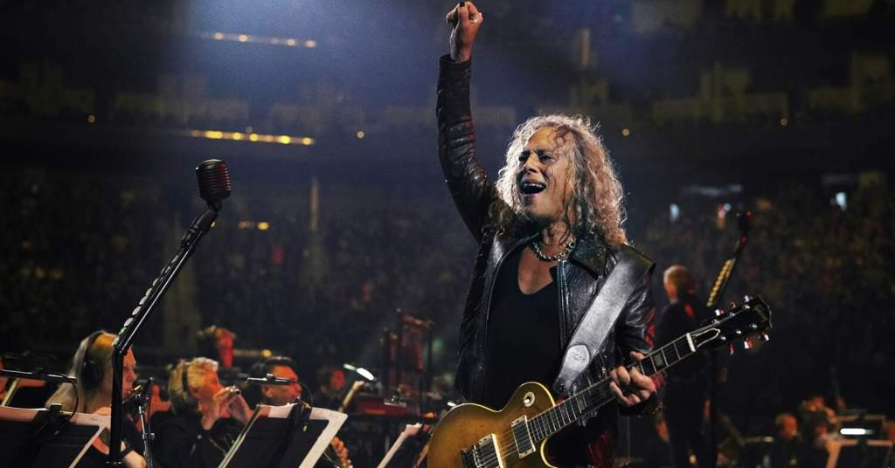

Kirk Hammett (Kirk Hammett) - um nome que provavelmente é familiar a todos os fãs de rock. Ele é o guitarrista da banda cult Metallica, para quem ele também escreve músicas. Seu sonho de infância de se tornar um músico famoso se tornou realidade.
Kirk Lee Hammett nasceu em 18 de novembro de 1962 na família de um marinheiro. Local de nascimento: San Francisco, EUA. Kirk é o segundo e meio filho da família. Ele tem um irmão mais velho, que em muitos aspectos influenciou a formação do gosto musical de Kirk e seu amor pela música, e uma irmã mais nova.
Kirk Hammett desde a infância estava interessado em arte e criatividade. Ele foi atraído pela música. O irmão mais velho tinha uma impressionante coleção de vários álbuns de rock, que o pequeno Kirk ouvia literalmente os buracos. Na adolescência, ele definitivamente decidiu por si mesmo que deveria se tornar um músico famoso e conquistar a cena do rock.
Hammett recebeu seu ensino médio em uma escola regular em Richmond. No ensino médio, ele conseguiu um emprego no Burger King. Esse trabalho secundário permitiu que Kirk economizasse dinheiro, porque aos 15 anos comprou para si a primeira guitarra elétrica, embora bastante simples. Ao mesmo tempo, o jovem Kirk começou a ter aulas de violão, foi direto para a educação, para o estudo do mundo da música. Naquela época, ele sonhava em se tornar tão legal e vibrante quanto Jim Hendricks. Aos 17 anos, Kirk adquiriu uma segunda guitarra e, no momento, a coleção de seus instrumentos musicais possui cerca de 20 guitarras elétricas diferentes.
A primeira banda musical de Hammett foi formada em 1980. A equipe se chamava Êxodo. Os caras tocaram no estilo hard rock e thrash metal. Em 1982, uma banda de rock lançou um disco demo, na gravação em que Kirk estava diretamente envolvido. A carreira dessa equipe foi construída principalmente como parte de performances em clubes. Ao mesmo tempo, Hammett e seu grupo trabalharam com o Metallica, apresentando-se no ato de abertura. O conhecimento dos membros do Metallica, que se interessaram por Kirk, apreciaram seu talento e domínio do instrumento e, finalmente, determinaram a vida futura do músico.
Não importa o quão cômico, mas na composição da banda de rock Hammett foi em 1 de abril de 1983. Ele se juntou ao Metallica durante a turnê, substituindo o guitarrista anterior.
O primeiro álbum lançado pelo grupo quando Kirk já estava em sua composição, foi chamado de Kill 'Em All. A equipe lançou o recorde no final de 1983, mas não teve um sucesso particularmente forte. Mais uma turnê promocional, concertos autorizados a "promover" o álbum.
Como resultado, Kirk Hammett se tornou um membro indispensável do Metallica. Além de ser o guitarrista principal da banda, ele também escreve músicas para a banda. No momento, ele dedicou mais de 30 anos de sua vida ao trabalho dessa equipe. O próprio Hammett admitiu repetidamente em uma entrevista que foi visitado por pensamentos para deixar a equipe e se envolver em projetos solo. Mas cada vez que ele recusava tal idéia, chegava à conclusão de que ele simplesmente não podia imaginar sua vida sem a música dessa banda de rock.
Kirk Hammett conta por que trocou Fender por Gibson logo no início da carreira
O guitarrista Kirk Hammett, do Metallica, é conhecido por usar, geralmente, modelos de guitarra Gibson e ESP, mas a primeira guitarra dele foi uma Fender Stratocaster. Por que ele trocou?
O guitarrista Kirk Hammett, do Metallica, é conhecido por usar, geralmente, modelos de guitarra Gibson e ESP. É raro vê-lo com uma Fender, embora a marca tenha sido responsável por seu primeiro instrumento.
Em entrevista ao canal da própria Gibson no YouTube, com transcrição do Ultimate Guitar, Hammett, claro, não poupou elogios à famosa fabricante de guitarras Les Paul, Flying V e outros modelos. Além disso, ele contou por que trocou sua primeira Stratocaster por uma V.
Inicialmente, ele comentou:
“Minha primeira guitarra de verdade foi uma Stratocaster. Quando eu a pluguei no amplificador que eu tinha, não consegui a plenitude, não consegui todas as frequências que eu queria ouvir.”
Em seguida, Kirk Hammett destacou que estava sendo muito influenciado pela sonoridade do primeiro álbum do Van Halen, autointitulado e lançado em 1978.
“Lembro de pegar um captador humbucker, acho que um DiMarzio Super 2, e colocar na ponte. Ainda assim, não fiquei satisfeito com o som. Eu tinha um plano: trabalhar por 6 meses e conseguir dinheiro o suficiente para trocar minha Stratocaster, junto de dinheiro extra, para comprar uma Gibson Flying V, pois eu adorava o som do Michael Schenker (UFO, MSG, Scorpions).”
A partir dessa troca, Hammett diz ter percebido que “ouvia o som da Gibson em praticamente todos os álbuns de rock”.
“Decidi que precisava de uma Gibson para obter aquele som. Lembro de chegar à loja e comprar uma Gibson Flying V 1979 nova, com a troca. Então, eu cheguei ao céu. Meu som estava mais cheio e eu percebi que o som que eu procurava era baseado em humbuckers. Eu ainda tenho essa Gibson Flying V e é ótima, pois foi a primeira guitarra que eu pude dominar.”
Kirk não bancou o cínico e reconheceu que as Stratocaster também são ótimas.
“Dá para fazer muita coisa com uma Strato. Porém, eu tinha pouca experiência com guitarra. Não conhecia o potencial da Stratocaster. Com a Gibson Flying V, tudo era mais óbvio. Os sons que eu queria, a forma de tocar, o acesso às casas… e o visual! Para um garoto, uma Flying V é como um grande brinquedo. Fiquei muito feliz. Com meu amplificador Marshall, tudo ficou completo.”
Nome completo Kirk Lee Hammett
Também conhecido(a) como The Ripper Nascimento 18 de novembro de 1962 (58 anos) Local de nascimento São Francisco, Califórnia Estados Unidos Gênero(s) Heavy metal, thrash metal, hard rock, speed metal Ocupação(ões) Músico Instrumento(s) Guitarra
Instrumento(s) notável(eis) ESP Kirk Hammett Modelos de instrumentos ESP KH-2, ESP M-2, ESP KH-DC, Gibson Les Paul. Período em atividade 1979–presente Outras ocupações Compositor, autor Gravadora(s) Warner Bros., Elektra, Vertigo, Megaforce Afiliação(ões) Metallica, Exodus, Spastik Children